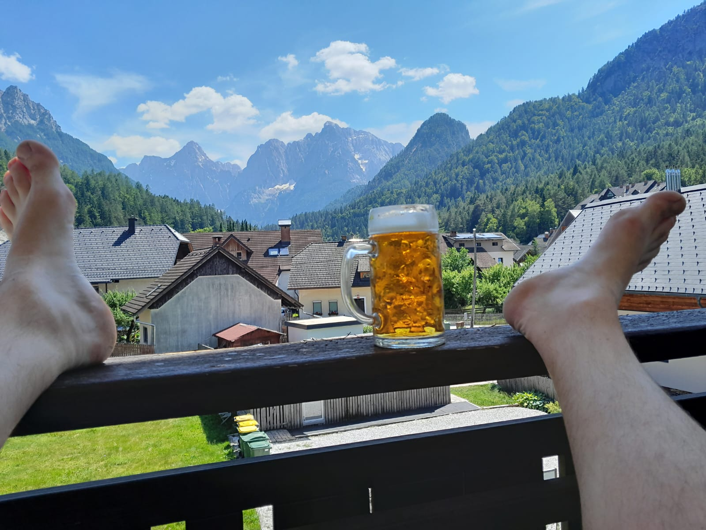

2025 - Slovinsko
2025 - Slovinsko

{kind=link}
 Základní informace
Základní informace
Termín: 14. - 21. června 2025 (7 dní)
Destinace: Julské Alpy, Slovinsko (oblast Soča)
Ubytování: Vitranc Apartments, Kranjska Gora
Účastníci: 28 členů týmu
Počasí:  Převážně slunečno, perfektní podmínky
Převážně slunečno, perfektní podmínky
 Přehled výstupů a aktivit
Přehled výstupů a aktivit
| Datum | Aktivita | Výška | Obtížnost | Poznámka |
|---|---|---|---|---|
| 14.6. | Příjezd a ubytování | - | - | Příjezd do oblasti Soča |
| 15.6. | Ciprnik + Visoka peč -> bobová dráha | 1747 m / 1749 m | T3 | První společná výprava |
| 16.6. | Pramen Soči + soutěska | - | T2 | 15 km procházka soutěskou |
| 17.6. | Triglav | 2864 m | PD-E | 3 skupiny, ferraty Plamenica + Tomiškova, dále přes zavřenou chatu Planica |
| 18.6. | Odpočinkový den | - | - | Jezero v Krajnske Gore, paddleboard, sjezd řeky |
| 19.6. | 4 ferraty | - | C + E | 3 lehčí (C), 1 náročná (E) - Ferraty Mojnstrana - Pot mojnstranških veveric a Hvadnik + nekteri ferrata Jerm'n, Peričnik vodopad |
| 20.6. | Mala Mojstrovka | 2333 m | B/C | Ferrata Hanzova pot (6 lidí, led!), ostatní Vystup Slemenova spica |
| 21.6. | Odjezd domů | - | - | Návrat do ČR |
 Den po dni
Den po dni
📅 Sobota 14. 6. 2025 - Příjezd
Aktivita: Příjezd a ubytování
Dorazili jsme do našeho ubytování Kranjska Gora v Julských Alpách. Po dlouhé cestě jsme se ubytovali a připravili na týden plný dobrodružství.
📅 Neděle 15. 6. 2025 - Ciprnik a Visoka peč
Výstup: Ciprnik (1747 m) + Visoka peč (1749 m)
Obtížnost: T3
Typ: První společná túra

Popis: První společná výprava celého týmu! Všichni jsme vyrazili na Ciprnik (1747 m) a ti nejlepší z nás pokračovali dále až na Visoka peč (1749 m). Skvělý rozcvičovací výstup s krásnými výhledy na Julské Alpy.
🎬 Video z výstupu
📅 Pondělí 16. 6. 2025 - Pramen Soči a soutěska
Aktivita: Procházka k pramenu řeky Soča
Délka: ~15 km soutěskou
Obtížnost: T2

Popis: Navštívili jsme pramen řeky Soča – jedno z nejkrásnějších míst ve Slovinsku. Od pramene jsme se vydali na asi 15km procházku soutěskou této smaragdově zelené řeky. Nádherná turkyzová barva vody a mohutné skály vytvářely úchvatnou scenérii.
📅 Úterý 17. 6. 2025 - Triglav (2864 m)
Výstup: Triglav - nejvyšší hora Slovinska
Výška: 2864 m
Obtížnost: PD až E (podle cesty)
{kind=link}
Popis: Hlavní vrchol naší výpravy! Byli jsme rozděleni do tří skupin podle obtížnosti:
Skupina 1 - Nejzdatnější (Ferratová cesta)
- Nahoru: Via ferrata "Čez Plamenica" (obtížnost D/E)
- Dolů: Tomiškova puť (ferrata C/D)
- Náročná, ale úchvatná cesta s exponovanými pasážemi
Skupina 2 - Střední (Standardní cesta)
- Turistická cesta přes Triglavski dom
Skupina 3 - Turistická
- Pohodovější varianta s delším přístupem
Vrchol pro všechny!
Všechny tři skupiny úspěšně dosáhly vrcholu Triglavu!
🎬 Video z výstupu
První díl ze tří částí dokumentace výstupu na nejvyšší vrchol Slovinska.
📅 Středa 18. 6. 2025 - Odpočinkový den u jezera
Aktivita: Relax a vodní sporty
Místo: Horské jezero
{kind=link}
Popis: Zasloužený odpočinkový den po náročném výstupu na Triglav. Tonda s Pájou (Pavlou) jezdili na paddleboardech a také sjeli kus řeky. Ostatní relaxovali u vody, koupali se a nabírali síly na další dny.
📅 Čtvrtek 19. 6. 2025 - Den ferrat
Aktivita: 4 via ferraty
Obtížnost: 3× C, 1× E
{kind=link}
Popis: Den věnovaný via ferratám! Tým byl rozdělen podle zkušeností:
Skupina základní - 3 lehčí ferraty (C)
- Ferrata 1: S vodopádem - úžasný zážitek!
- Ferrata 2: Soutěsková ferrata
- Ferrata 3: Třetí ferrata obtížnosti C
Skupina pokročilá - Extrémní ferrata (E)
Nejzdatnější z nás si dali ještě čtvrtou ferratu obtížnosti E – extrémně náročná, ale neskutečný adrenalin!
Speciální ferraty
Jedna z ferrat vedla přímo kolem vodopádu a další procházela soutěskou – unikátní zážitky!
📅 Pátek 20. 6. 2025 - Mala Mojstrovka (2333 m)
Výstup: Mala Mojstrovka
Výška: 2333 m
Ferrata: Hanzova pot (B/C)
Obtížnost: Komplikace - led!

Popis: Plánovali jsme společný výstup přes ferratu Hanzova pot (B/C), ale na místě jsme zjistili, že velká část lana je pod ledem!
Rozdělení týmu:
- 6 nejzdatnějších jedinců - Pokračovali ferratou přes led a dosáhli vrcholu Mala Mojstrovka
- Ostatní členové - Zvolili bezpečnější variantu a zdolali jiný vrchol v okolí
Nebezpečné podmínky
Led na ferratě byl nečekanou komplikací. Rozhodnutí rozdělit tým bylo správné - bezpečnost především!
🎬 Video z výstupu
📅 Sobota 21. 6. 2025 - Odjezd
Aktivita: Návrat domů
Poslední den jsme zabalili, uklidili ubytování a vydali se na cestu zpět do České republiky. Hlavy plné zážitků a srdce plná krásných vzpomínek na Julské Alpy!
 Statistiky výpravy
Statistiky výpravy
| Kategorie | Hodnota |
|---|---|
| Počet účastníků | 30 |
| Celkem dní | 7 |
| Počet výstupů | 5 |
| Počet ferrat | 7+ |
| Nejvyšší bod | 2864 m (Triglav) |
| Úspěšnost vrcholů | 100% |
| Ujeto km autem | ~1700 km |
| Paddle board km | Nezapomenutelné! 🏄 |
 Fotogalerie
Fotogalerie